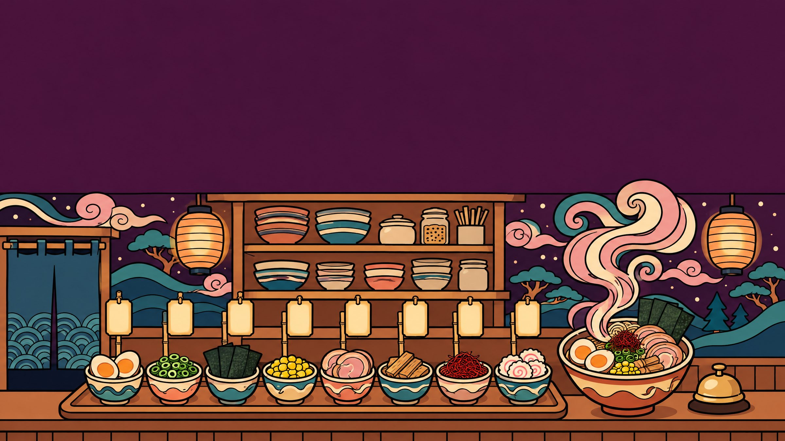
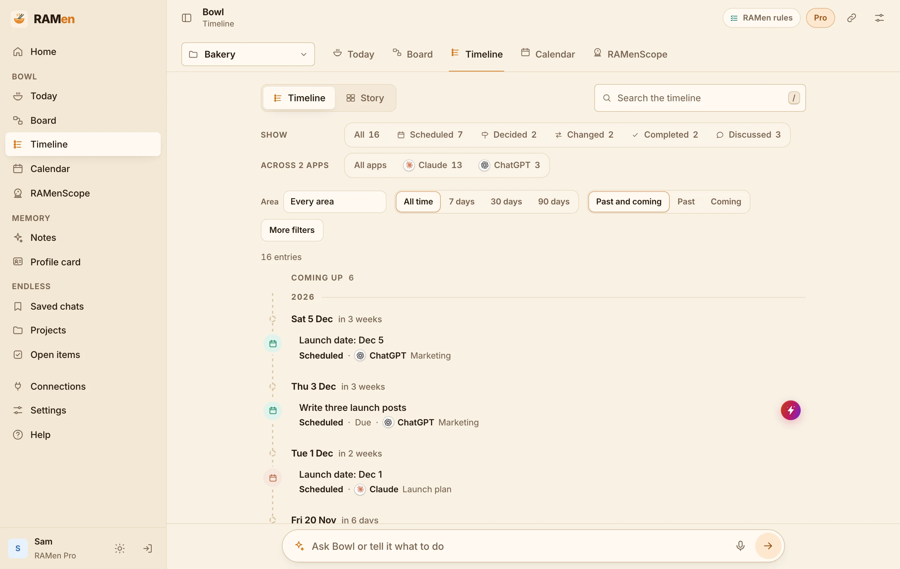
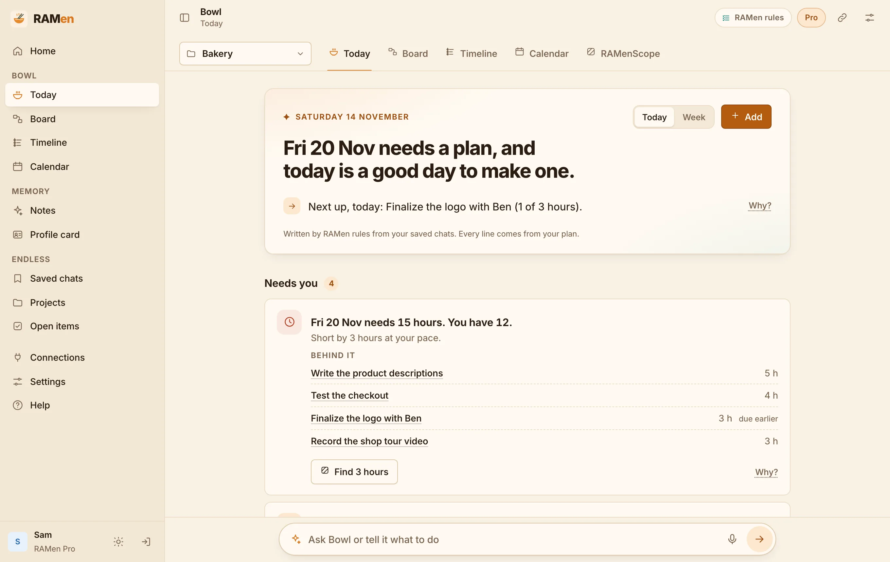
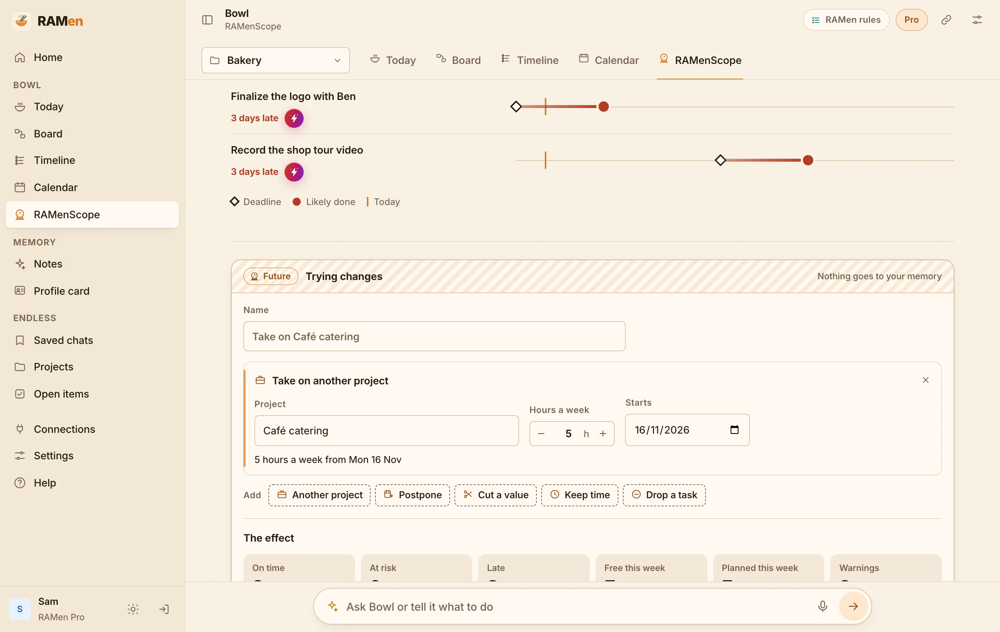
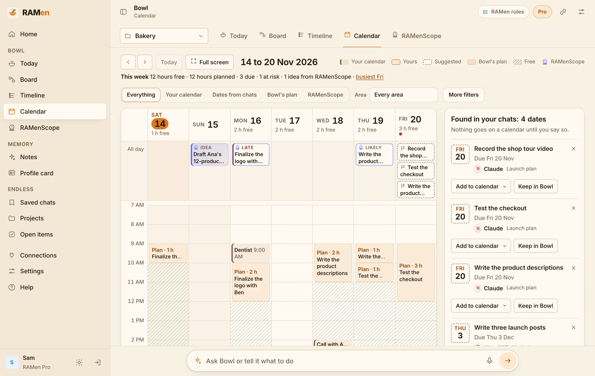
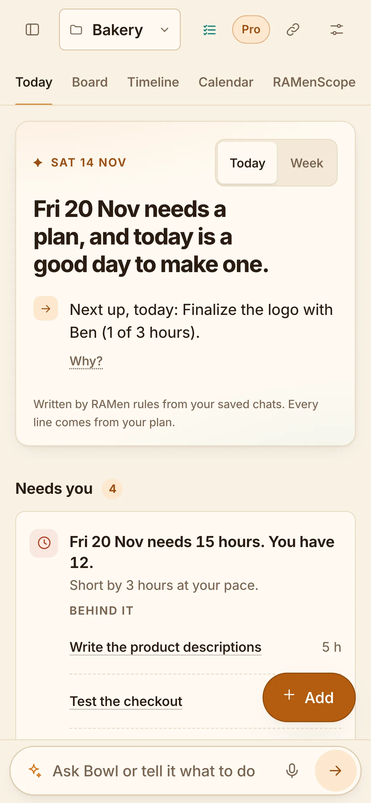
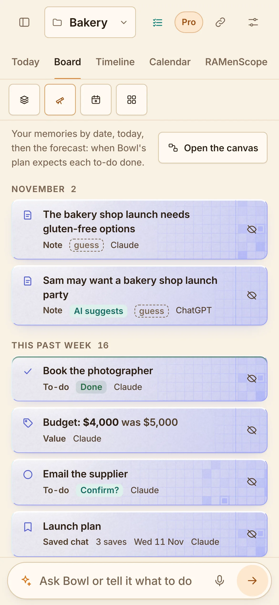

Your AI life, brought together.
See the future. Every chat you save from Claude, ChatGPT, Gemini and your local AI, on one whiteboard: your memories by date, today, then your forecast.
From your oldest memory to your forecast.
Everything your AIs know, on one whiteboard in time order, each part of your life in its own color. Scroll back to the start. Press Today, then look past it: that's your forecast.
What happened, and what's expected. Memories wear a pin. Forecasts are dashed glass with the days they're likely to land. You can always tell them apart, color or no color.
It starts full: bring in your whole history from ChatGPT, Claude and Gemini, and every chat is laid out.

RAMen Bowl, shown with a sample project.
A timeline that tells the truth.
When it was discussed, decided, changed and done, with the app and your own words. Unsure dates say so.

Your week, honestly.
Bowl lines up your work with your free time and tells you early: "Friday needs 12 hours. You have 6." With the tasks behind it.
A briefing worth reading. Each morning: what changed, what needs you, what's going well, what's next. No luck, no fortune telling. Every line shows its receipts.

Look into your Bowl before you decide.
Take on a client. Move the launch. Keep Fridays free. Every card slides to the day it would land, so you watch your future change. Compare it with your plan as it is, then keep it or let it go.

Talk to your board. It talks back.
Ask what's at risk this week, or tell it what to do: move the launch to Friday, show me my health, put my money stuff together. Bowl answers in plain words and rearranges the whiteboard. Nothing in your memory changes until you say so.
Free AI on your own device.
Bowl's AI runs on your phone or computer at no extra cost, and on your phone it does its reading overnight while it charges.
Can't run it, or want sharper answers? Turn on RAMen Cloud AI and pay only for what you use. You set a monthly limit, and Bowl never goes past it.
Your plans, beside your events.
Link your calendar, read-only. Bowl fits your work around your events and lists the dates it found in your chats: add them to your calendar, keep them in Bowl, or let them go.
Considered, committed, done. An AI saying it sent the email isn't a sent email. Bowl keeps ideas, plans and what really happened apart.

Private like the rest of RAMen.
Keep a project only on your computer, out of your AI apps, or share one view by link. Bowl's AI runs on your own phone or computer, on RAMen Cloud AI when you turn it on, or on your own key. Nothing is sold. Nothing trains anyone's AI.
Everywhere you are.
In your browser, in RAMen Desktop and on your phone.



In RAMen Pro ($1.99 a month, or $19 a year) and the 14-day trial. RAMen Free shows the board and timeline of one project.